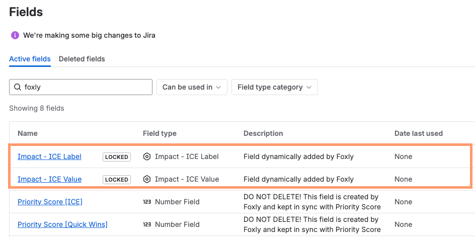
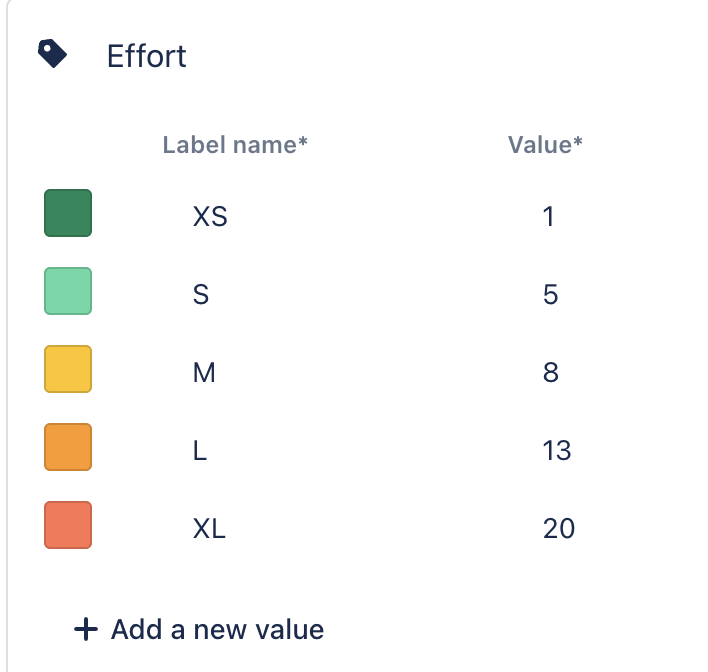
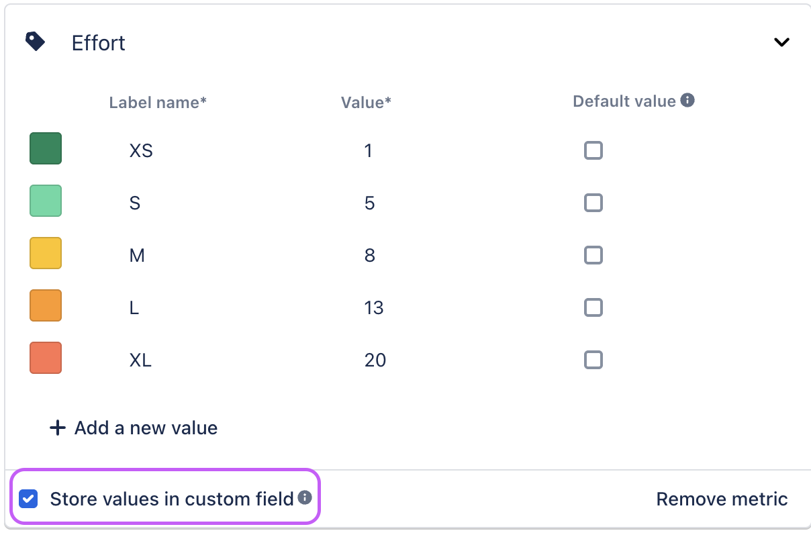

Store metric in a custom field
The Store metric in custom fields feature is disabled and will be retired soon
Due to operational changes and platform updates, the Store metric in custom fields feature is now disabled and will be permanently retired after December 10, 2025.
What’s NOT changing
Foxly’s prioritization metrics inside the app will continue to work exactly as they do today.
What is changing
The Store values in a custom field feature is no longer available. The checkbox is disabled.
After 10 December 2025, Foxly will remove the Jira custom fields that were created to duplicate metric values outside the app. These fields are marked lockedand include the description “Field dynamically added by Foxly”.
Only places where you use these fields outside Foxly will be affected, such as JQL filters, issue screens, Jira automation, dashboards, reports, or gadgets.
Once the fields are removed, any filters, automations, or dashboards that rely on them will stop working.
How to identify which fields will be removed
To identify which fields will be removed, go to:
Jira admin settings > Work items > Fields > type “Foxly” in the search box.
Look for Foxly-created dynamic fields with the locked label. Only these fields will be deleted.

Recommended action
Review your workflows, dashboards, and automations that use Foxly-created dynamic Jira fields, and update them to remove dependencies on these fields.
You can continue using:
Priority score fields
Your own Jira custom fields in prioritization formulas
Having Foxly metrics stored in the custom field unlocks the ability to search for issues by metrics, create reports, and automate.
For example, if your team is already using story points to estimate tickets and you would like to include them in the Priority score calculation, you can create an Automation rule in Jira. Let’s examine what custom fields are available and how to switch them on.
Automation examples
The 4 ways to automate your Jira backlog prioritization article covers four examples of how you can use Automation for Jira and Foxly. There, you can learn more about how to connect Story points to Foxly, how flagged tickets can influence your priority score, and more.
Store metrics in a custom field
The column under Label name is the metric label, and the column under Value is the metric value.

Metric custom fields are created in the following format:
[Metric name] - [Priority model name] Value[Metric name] - [Priority model name] Label
For example, if you’re using an ICE priority model and enable the custom field for Ease metric the following custom fields will be generated:
Ease - ICE Valuewhere the numeric representation of the metric is stored.Ease - ICE Labelwhere the labels of the metrics are stored (examples: XS, M, L in case of Ease metric).
Metric type |
|
|
|---|---|---|
Rating | The numerical value of the metric | Numbers from 1-5 representing the number of stars |
Label | The numerical value of the metric | The text label of the metric |
Short text | The numeric value of the metric | The text label of the metric |
Number | The number imputed from Foxly | Not present |
Enabling Metric custom fields
You can choose which metrics you want to enable as custom fields in Foxly settings.
You can enable custom fields for up to 50 Foxly Metrics.
Navigate to Foxly > Customize.
In the Edit Template section, click the metric.
Select the checkbox Store values in custom field.
Click Save changes and Save in all projects to enable the custom field in all projects that use this template.

If you’re using Next-gen projects, you need to follow the steps in Atlassian’s Announcing support for app issue fields in next-gen projects page to enable custom fields in them.